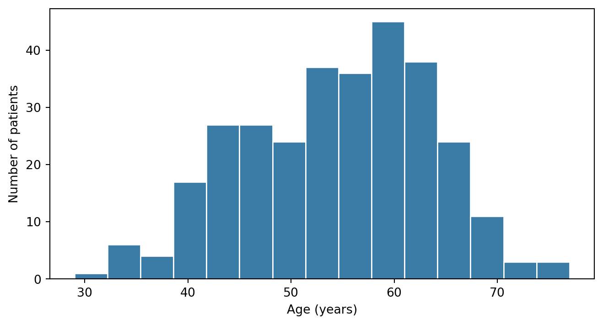
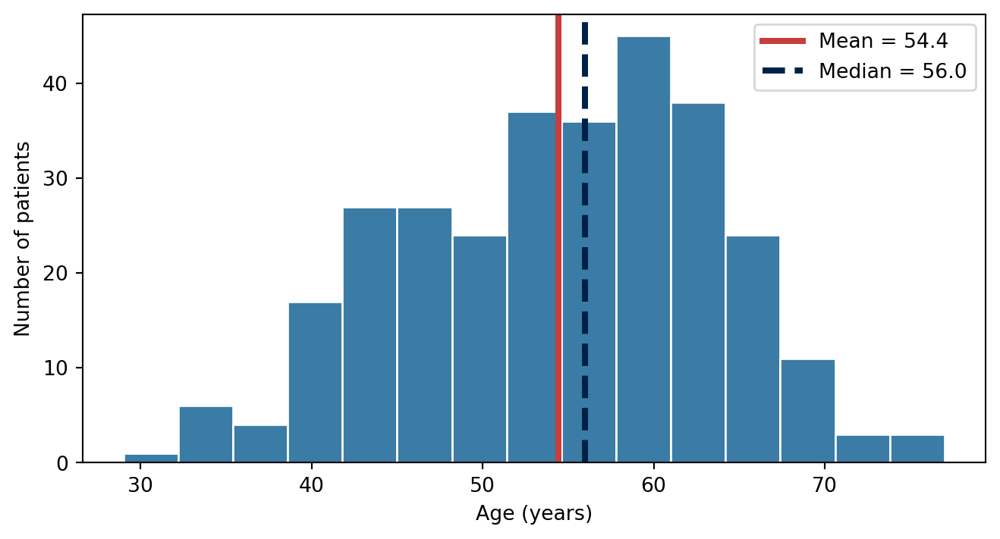
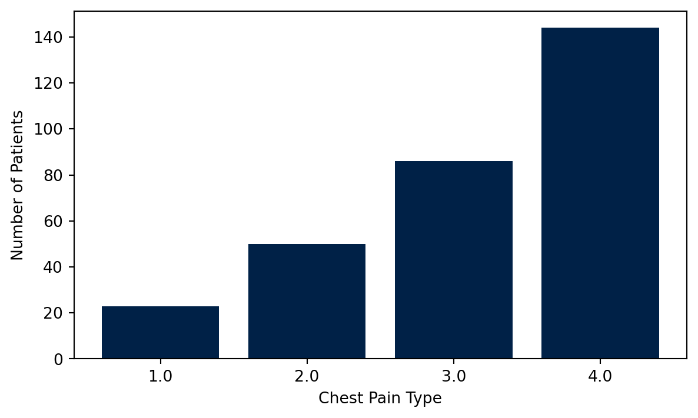
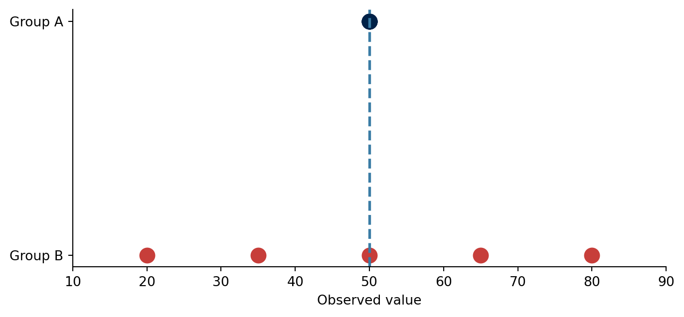
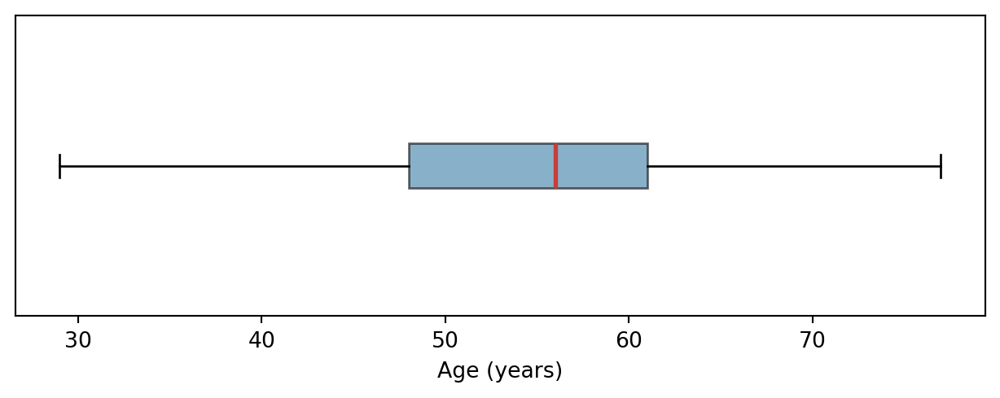
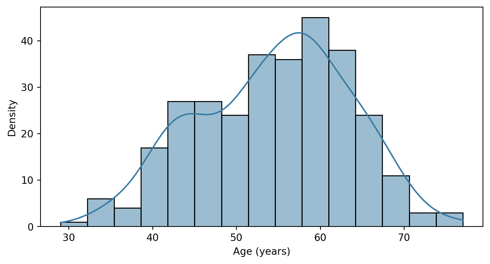
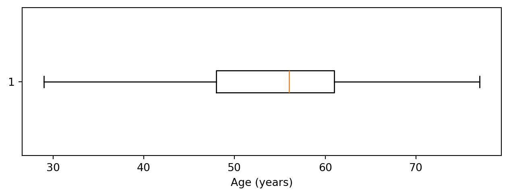
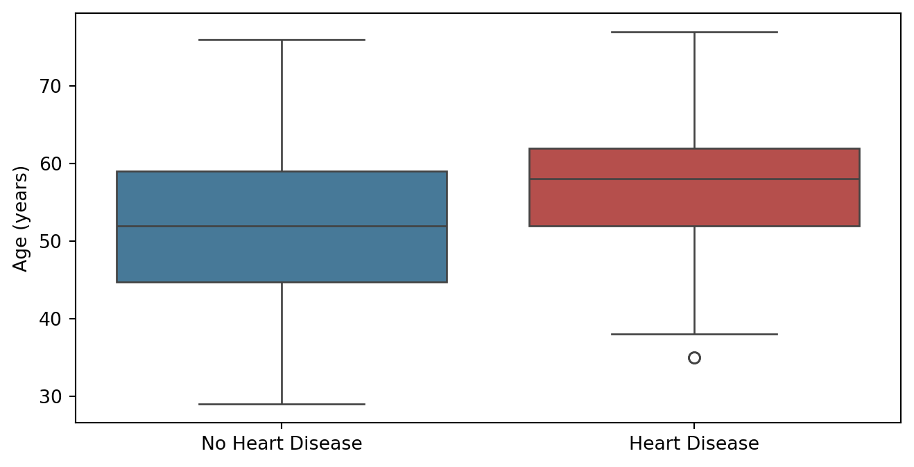
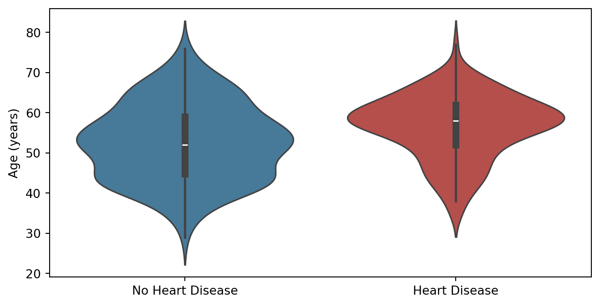

Descriptive Statistics and Visualisation
Summarising and exploring clinical data
NoteClinical Question
What is a typical patient in our dataset?
In the previous section, we explored the Cleveland Heart Disease dataset and visualised several variables.
However, visual inspection alone is often insufficient.
We frequently want to summarise a large collection of observations using a small number of interpretable statistics.
Measures of central tendency help us describe the centre of a dataset.
Why Summarise Data?
Consider the ages of all 303 patients in the Cleveland Heart Disease dataset.
Rather than inspecting hundreds of individual values, we can summarise the overall patient population using a few representative numbers.
A natural question is:
Where is the centre of this distribution?
The Mean
The mean (or average) is one of the most commonly used summary statistics.
It is calculated by adding all observations and dividing by the number of observations.
\[ \bar{x} = \frac{1}{n}\sum_{i=1}^{n} x_i \]
where:
- \(x_i\) is the i-th observation,
- \(n\) is the number of observations,
- \(\bar{x}\) is the sample mean.
Example: Mean Age
mean_age = df["age"].mean()
print(f"Mean age = {mean_age:.2f} years")Mean age = 54.44 years
TipInterpretation
The mean age represents the average age of all patients in the dataset.
The Median
The median is the middle observation after sorting the data.
Unlike the mean, the median is less affected by extreme values.
Example: Median Age
median_age = df["age"].median()
print(f"Median age = {median_age:.2f} years")Median age = 56.00 years
TipInterpretation
When the mean and median are similar, the distribution is often approximately symmetric.
The Mode
The mode is the most frequently occurring value.
The mode is especially useful for categorical variables.
Example: Chest Pain Type
mode_cp = df["cp"].mode()[0]
print(f"Mode of chest pain type = {int(mode_cp)}")Mode of chest pain type = 4
The category with the highest bar corresponds to the mode.
Comparing Mean, Median and Mode
Each measure describes the centre of a distribution in a slightly different way.
| Statistic | Description |
|---|---|
| Mean | Arithmetic average |
| Median | Middle value |
| Mode | Most frequent value |
The best choice depends on the type of data and the shape of the distribution.
Mean versus Median
Consider a distribution containing a few unusually large values.
The mean is pulled towards those extreme observations, whereas the median remains relatively stable.
Interactive Demonstration: Mean versus Median
Move the final observation and observe how the mean and median respond.
TipWhat to notice
As the final observation becomes more extreme, the mean moves more strongly than the median. This is why the median is often preferred for skewed clinical measurements.
ImportantKey Idea
The median is generally more robust to extreme values than the mean.
Applying Measures of Central Tendency
Let us compare the mean and median of several variables.
summary = pd.DataFrame({
"Mean": [
df["age"].mean(),
df["chol"].mean(),
df["trestbps"].mean(),
df["thalach"].mean()
],
"Median": [
df["age"].median(),
df["chol"].median(),
df["trestbps"].median(),
df["thalach"].median()
]
},
index=[
"Age",
"Cholesterol",
"Blood Pressure",
"Maximum Heart Rate"
])
summary.round(2)| Mean | Median | |
|---|---|---|
| Age | 54.44 | 56.0 |
| Cholesterol | 246.69 | 241.0 |
| Blood Pressure | 131.69 | 130.0 |
| Maximum Heart Rate | 149.61 | 153.0 |
Which variables show the largest difference between the mean and median?
What might this tell us about their distributions?
Try It Yourself
TipTry it yourself
Using the Cleveland dataset:
- Calculate the mean cholesterol level.
- Calculate the median maximum heart rate.
- Find the mode of chest pain type.
- Find the mode of sex.
Suggested commands:
df["chol"].mean()
df["thalach"].median()
df["cp"].mode()[0]
df["sex"].mode()[0]Measures of Variability
Measures of central tendency tell us where the centre of a distribution is.
However, they do not tell us how spread out the data are.
Two patient groups can have the same mean but very different variability.
Same Mean, Different Spread

Both groups have the same mean:
\[ \bar{x}=50 \]
but Group B is much more variable.
ImportantKey Idea
A measure of centre is not enough. We also need a measure of spread.
Range
The simplest measure of variability is the range:
\[ \text{Range} = \text{Maximum} - \text{Minimum} \]
The range tells us the total spread between the smallest and largest observations.
Example: Age Range in the Cleveland Dataset
age_min = df["age"].min()
age_max = df["age"].max()
age_range = age_max - age_min
print(f"Minimum age = {age_min:.0f} years")
print(f"Maximum age = {age_max:.0f} years")
print(f"Range = {age_range:.0f} years")Minimum age = 29 years
Maximum age = 77 years
Range = 48 yearsThe range is easy to understand, but it depends only on two observations: the minimum and the maximum.
Standard Deviation
The standard deviation describes how far observations typically lie from the mean.
A small standard deviation means the observations are tightly clustered around the mean. A large standard deviation means the observations are more spread out.
For a sample, the variance is:
\[ s^2 = \frac{1}{n-1}\sum_{i=1}^{n}(x_i-\bar{x})^2 \]
The standard deviation is the square root of the variance:
\[ s = \sqrt{s^2} \]
where:
- \(s^2\) is the sample variance,
- \(s\) is the sample standard deviation,
- \(x_i-\bar{x}\) is the distance between an observation and the mean.
Interactive Demonstration: Changing Variability
Move the slider and observe how the mean and standard deviation change.
Move the final patient value: 80
Mean:
Standard deviation:
TipInterpretation
As the final value moves further away from the others, the standard deviation increases.
Example: Standard Deviation of Age
age_mean = df["age"].mean()
age_sd = df["age"].std()
print(f"Mean age = {age_mean:.2f} years")
print(f"Standard deviation = {age_sd:.2f} years")Mean age = 54.44 years
Standard deviation = 9.04 yearsInterquartile Range
The interquartile range focuses on the middle 50% of observations.
\[ IQR = Q_3 - Q_1 \]
where:
- \(Q_1\) is the 25th percentile,
- \(Q_3\) is the 75th percentile.
Unlike the range, the IQR is less sensitive to extreme values.
Example: IQR of Age
q1 = df["age"].quantile(0.25)
q3 = df["age"].quantile(0.75)
iqr = q3 - q1
print(f"Q1 = {q1:.0f} years")
print(f"Q3 = {q3:.0f} years")
print(f"IQR = {iqr:.0f} years")Q1 = 48 years
Q3 = 61 years
IQR = 13 years
The box shows the middle 50% of the data. The red line shows the median.
Try It Yourself
TipTry It Yourself
Using the Cleveland dataset:
- Calculate the range of cholesterol.
- Calculate the standard deviation of resting blood pressure.
- Calculate the interquartile range (IQR) of maximum heart rate.
- Which variable appears most variable:
- age
- cholesterol
- resting blood pressure
- maximum heart rate
- Why might the IQR sometimes be preferred over the range?
Suggested commands:
chol_range = df["chol"].max() - df["chol"].min()
df["trestbps"].std()
q1 = df["thalach"].quantile(0.25)
q3 = df["thalach"].quantile(0.75)
q3 - q1Summary of Centre and Spread
summary = df[["age", "trestbps", "chol", "thalach"]].agg(
["mean", "median", "std", "min", "max"]
).round(2)
summary| age | trestbps | chol | thalach | |
|---|---|---|---|---|
| mean | 54.44 | 131.69 | 246.69 | 149.61 |
| median | 56.00 | 130.00 | 241.00 | 153.00 |
| std | 9.04 | 17.60 | 51.78 | 22.88 |
| min | 29.00 | 94.00 | 126.00 | 71.00 |
| max | 77.00 | 200.00 | 564.00 | 202.00 |
This table combines measures of central tendency and variability.
Although numerical summaries are useful, they cannot reveal the full shape of a distribution.
To understand skewness, multimodality, and potential outliers, we need visualisation.
Visualising Distributions
So far, we have summarised the Cleveland dataset using numerical measures such as:
- Mean
- Median
- Mode
- Standard deviation
- Interquartile range
These summaries are useful, but they do not tell the whole story.
For example:
- Is the distribution symmetric?
- Is it skewed?
- Are there multiple peaks?
- Are there unusual observations?
To answer these questions, we need visualisation.
ImportantKey Idea
A good statistician always looks at the data before performing formal analyses.
Histograms
A histogram groups observations into intervals (bins) and counts how many observations fall into each interval.
Example: Age Distribution

From this histogram we can immediately identify:
- the centre of the distribution,
- the spread,
- the overall shape.
Reading Histograms
When looking at a histogram, ask yourself:
- Where is the centre?
- How wide is the distribution?
- Is the distribution symmetric?
- Are there multiple peaks?
- Are there possible outliers?
These questions provide valuable insight before any formal statistical testing.
Density Curves
A density curve provides a smoothed representation of a distribution.
Rather than counting observations within bins, it estimates the underlying shape of the data.

The smooth curve highlights the overall shape of the distribution while reducing sensitivity to the exact choice of bins.
Boxplots
A boxplot provides a compact summary of a distribution.
Recall the concepts introduced earlier:
- Median
- First quartile (Q1)
- Third quartile (Q3)
- Interquartile range (IQR)
A boxplot combines all of these quantities into a single visualisation.

The box represents the middle 50% of observations, while the line inside the box represents the median.
Comparing Groups Visually
Visualisation becomes particularly useful when comparing groups.
For example:
Do patients with heart disease tend to be older?

The two groups appear different.
Patients with heart disease appear to be slightly older on average.
However, visual differences alone are not enough.
Beyond Boxplots: Violin Plots
A violin plot combines:
- a boxplot,
- a density estimate.
The width of the violin indicates where observations are concentrated.

Violin plots provide more information about the shape of a distribution than boxplots alone.
Try It Yourself
TipTry It Yourself
Using the Cleveland dataset:
- Create a histogram of cholesterol.
- Create a histogram of maximum heart rate.
- Create a boxplot of resting blood pressure.
- Compare cholesterol distributions between heart disease and non-heart disease patients.
- Which visualisation do you find most informative?
Suggested commands:
plt.hist(df["chol"], bins=15)
plt.hist(df["thalach"], bins=15)
sns.boxplot(x=df["trestbps"])
sns.boxplot(
data=df,
x="heart_disease",
y="chol"
)
ImportantTransition to Hypothesis Testing
The visualisations suggest that some characteristics differ between patients with and without heart disease.
However, visual differences alone do not tell us whether those differences are likely to reflect genuine population differences or random sampling variation.
Statistical hypothesis testing provides a formal framework for answering this question.
Key Takeaways
ImportantKey Takeaways
- Descriptive statistics help summarise clinical datasets.
- Measures of central tendency describe the centre of a distribution.
- Measures of variability describe how spread out the data are.
- Histograms show the shape of numerical distributions.
- Boxplots and violin plots help compare distributions between groups.
- Visual differences are useful, but they do not prove statistical significance.